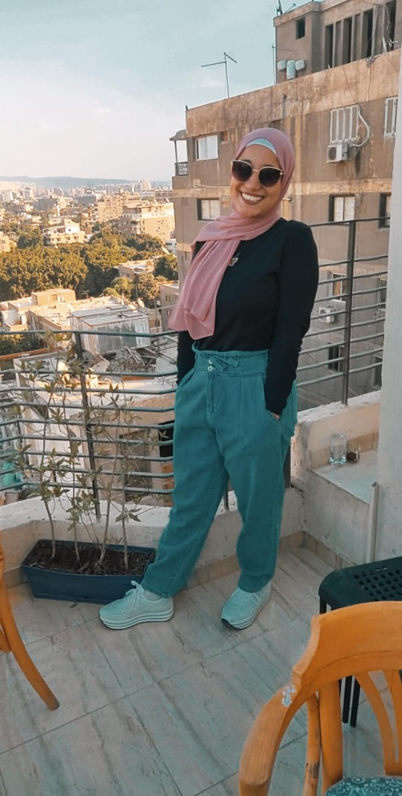

CV Highlights
- Education
- Work Experience
- SkiLls
- Personal Information
Education
>
- University: Banha University,faculty of engineering
- Anticipation Graduation: June 2024
- Major: Mechanical Engineering – Communication
- Academic grade: A-
Work Experience
- Freelancer as web developer
- İnstructor at 3C
- Salse Manager at CAC
e-courses
- classic control
- C& C++ programming Languages
- HTML& CSS programming Languages
Personal Information:
< A young, determined hard,leader and smart working person. I believe in myself and my SkiLls more than any thing, I see that your company will use me well as i will do, task based roles and complete ownership of work. I am a student in my early years of college, I admit it. But I am trying my best to race against time and struggle with circumstances in order to reach my ambition that has no ceiling and therefore I look forward to starting early and I also look to be distinguished by touching on many areas, but not only touching them, but also mastering them, working on them and benefiting from them in my work . And the aspiration for excellence and always progress, whatever the circumstances, is my principle in life.
Languages Known:
- Arabic
- English
- Jermany
Hobbies
- playing Chess
- swimming
- listening music
- playing drums
Activities
Member Engineering innovation team - EitMember| ENACTUS- SHOUBRA branch- Banha University
- Collected and shared studying materials with my batch
- Explaining and facilitating some of the materials that I am proficient with for students who are good at understanding difficulties, and the most prominent of these subjects are (engineering drawing - physics - mathematics - electronics).
- learning how to PRESENT, write script for national compettion